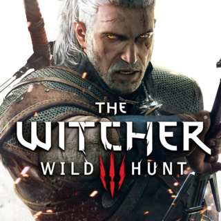

The Elder Scrolls V: Skyrim é um RPG eletrônico desenvolvido pela Bethesda Games Studios e publicado pela Bethesda Softworks. É o quinto jogo da série The Elder Scrolls, seguindo The Elder Scrolls IV: Oblivion. Foi lançado em 11 de novembro de 2011 para PlayStation 3, Xbox 360 e PC. É o primeiro jogo ocidental da história a receber 40/40 (nota máxima) na conceituada revista japonesa Famitsu. O Jogo Conseguiu três prêmios no VGA 2011, incluindo melhor jogo do ano.Os acontecimentos deste jogo passam-se duzentos anos depois da, já quase esquecida, crise de Oblivion, no ano 201 da quarta era (4E 201) na província de Skyrim, no norte de Tamriel, e 30 anos após a mais recente Grande Guerra, onde o Aldmeri Dominion e o Império lutaram arduamente, mas que quase extinguiu os humanos de Tamriel, e para evitar tal derrota, acordaram com a Aldmeri Dominion, rendendo duas forças e sujeitando-se as suas exigências.
The witcher :O jogo é baseado na série de livros A Saga do Bruxo Geralt de Rívia, do escritor polonês Andrzej Sapkowski. No Brasil, já há quatro livros da saga publicados: O Último Desejo, A Espada do Destino, O Sangue dos Elfos e Tempo do Desprezo. The Witcher passa-se em um mundo de fantasia medieval e segue a história de Geralt de Rívia, um dos bruxos (witchers) restantes - um viajante caçador de monstros de aluguel, presenteado com poderes sobrenaturais. Um sistema de decisão-consequência com atraso quer dizer que as consequências das decisões de jogadores poderão aparecer em atos posteriores do jogo. Isso faz com que os jogadores pensem de forma crítica antes de tomar qualquer decisão, além de permitir ao jogo ter um sistema único de valor replay, já que as consequências resultantes das decisões do jogador podem levar a eventos diferentes no futuro, e, por fim, uma experiência de jogo diferente a cada jogada. A natureza das opções enfrentadas ao jogar raramente caem no típico sistema de moralidade "preto e branco", presente em vários RPGs, e os jogadores, por vezes, encontram-se escolhendo entre a melhor opção de duas opções ruins. Em vez de fazer uma escolha clara entre o bem e o mal, o jogo apresenta situações mais reflexivas da moralidade real.

Grand Theft Auto V, ou simplesmente GTA V, é um jogo de ação e aventura em mundo aberto desenvolvido pela empresa britânica Rockstar North e publicado pela Rockstar Games no dia 17 de setembro de 2013 para os videogames Playstation 3 e Xbox 360.
Em Grand Theft Auto V, a história decorre na cidade fictícia de Los Santos e Blaine County, no estado de San Andreas e nos seus arredores, baseada na moderna Los Angeles e na Califórnia do Sul. Los Santos era uma das três cidades do jogo Grand Theft Auto: San Andreas, lançado em 2004. Pela primeira vez na série, em Grand Theft Auto V existem três protagonistas jogáveis: Michael De Santa, Trevor Philips e Franklin Clinton. A história segue os seus esforços para planejar e executar seis grandes assaltos e acumular riqueza para si mesmos, além dos seus conflitos pessoais como homens de personalidades completamente distintas.

Fallout 4: Os jogos da franquia Fallout colocam você em um futuro distópico, em que a humanidade entrou em guerra por causa de recursos. Os combates só foram encerrados depois de um verdadeiro holocausto nuclear que dizimou quase toda a população mundial. Algumas pessoas, no entanto, sobreviveram por terem se abrigado a tempo em fortes subterrâneos, os chamados Vaults. É de um deles, o Vault 111, que sai o protagonista de Fallout 4 , que se passa em sua maior parte 200 anos após o fim da guerra nuclear, mais precisamente em 2277 – o mesmo ano de Fallout 3 . E, enquanto o abrigo do jogo anterior estava perto de Washington, o do novo se situa em Boston e é rodeado por um ambiente retrô e, ao mesmo tempo, futurista, que promete ser do tamanho do mapa de The Elder Scrolls V: Skyrim .